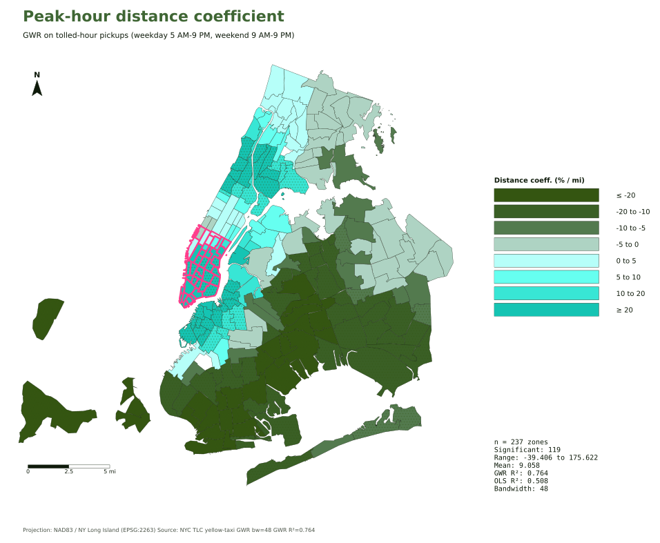
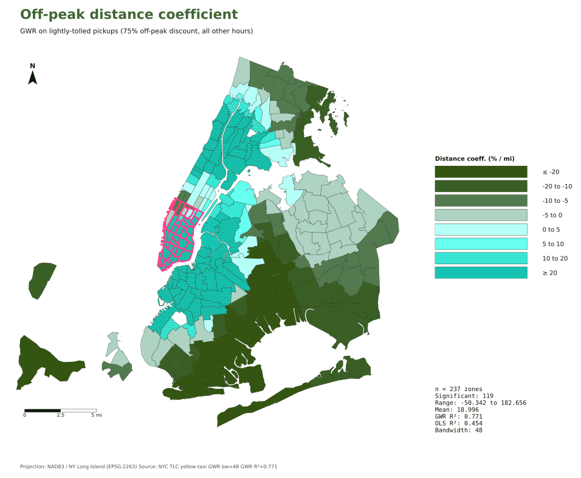
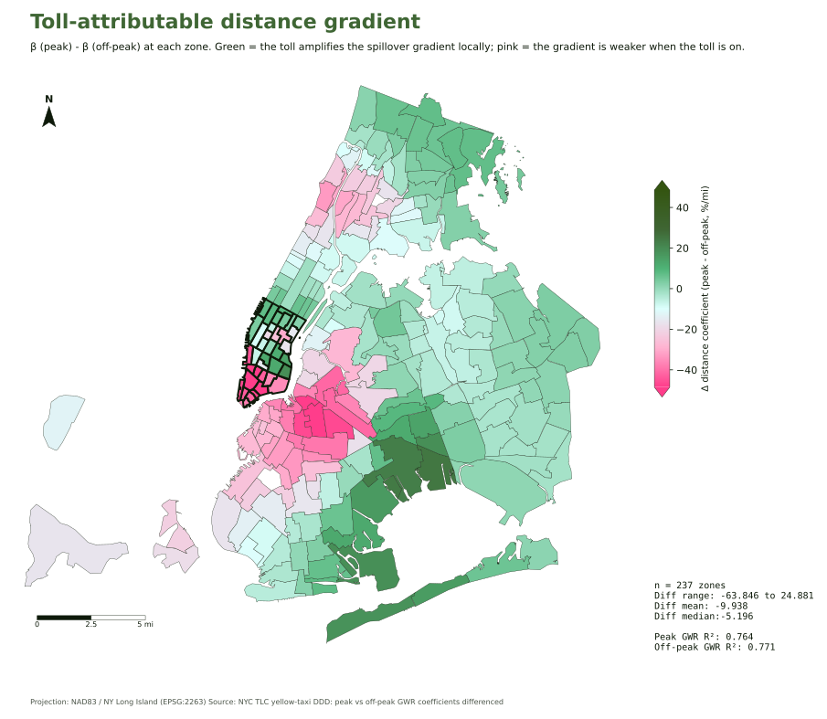

Was it really the toll?
Bridge entries fell. Taxi pickups rose where I didn't expect them. The CBD got busier. The air got cleaner. Every dataset so far is consistent with a policy that worked. I went back to the taxi data to check whether the cordon was actually causing the spillover pattern. The answer surprised me.
Compare the hours when the toll is on to the hours when it's mostly off
The cordon toll isn't the same all day. During peak hours, weekdays from 5 AM to 9 PM, weekends from 9 AM to 9 PM, driving in costs $9. During off-peak, the toll drops by 75 percent, to $2.25. So if the toll is the thing producing the spillover pattern outside Manhattan, the pattern should be strongest when the toll is full price, and weakest when it's basically off.
To test that, I split the taxi trips into peak and off-peak hours and ran the same neighborhood-by-neighborhood analysis on each separately. Same 237 zones, same method, just different times of day. Inner Manhattan should stay flat in both. The outer-borough fringe should glow brighter at peak than at off-peak. That's the prediction.
Off-peak is the stronger pattern, not the weaker one


Look at the two maps side by side. The off-peak map (right) has deeper reds in outer Brooklyn, Queens, and Staten Island. On average, every additional mile from the cordon adds about +9 percentage points of pickup growth at peak, and about +19 percentage points off-peak. Off-peak is more than twice as strong.
Most of the geography is something else
If the cordon were the main thing producing the outer-borough taxi spillover, off-peak should be flatter than peak. It isn't. The pattern survives, gets stronger, in fact, at the times when the toll is essentially off. Which says most of what we're seeing on those maps isn't really about the cordon at all.
What it probably is about: post-pandemic taxi recovery (which has been happening for years and skews late-night and outward), continued growth in airport pickups, and outer-borough demand that was already on its way up before January 5, 2025. Plus the long, slow story of yellow cabs reaching further out as Uber and Lyft eat into their core market.
The cordon contributes something on top of all that. But it's the addition, not the engine.
Subtracting the part that isn't the toll
If most of the spatial pattern is happening at all hours, we can subtract it out. For every neighborhood, take its peak-hour growth-with-distance number, subtract the off-peak one, and what's left is the slice that only happens when the toll is on. That difference is what we can credibly call the cordon's own contribution to the geography.

The map is much paler than the previous two, most of the bright color was already there off-peak. What's left averages about −10 percentage points per mile, and is mostly negative. Translation: during tolled hours, the relationship between distance and pickup growth gets flatter, not steeper. The cordon is doing real work, but its job is dampening the long-distance spillover, not creating it.
That's a meaningful effect. It's also a small slice of what the all-hours map was showing.
The transit data shows the same null
If a peak-hour cordon were really driving the changes, weekday rush-hour transit should have surged harder than weekend transit. It didn't. Subway grew 8.5 % on weekdays and 10.4 % on weekends. LIRR grew about 11 % on weekdays and 13 % on weekends. Bridges and tunnels were nearly flat both. Several modes actually grew more on weekends, the opposite of a peak-binding signature.
It's the same shape as the off-peak taxi result, in a completely different dataset. Whatever's shaping the post-cordon patterns isn't concentrated in the hours the toll is on.
The real cordon effect is small, real, and specific
So the cordon's actual contribution to the spatial taxi spillover, once we subtract everything that was happening anyway, is roughly 10 percentage points per mile of distance-flattening during tolled hours. That's a meaningful, real, statistically significant effect. It's also a small slice of the +32 % outer-borough peak that the all-hours map showed.
The cordon amplified a redistribution that was already in motion. It didn't start it. The honest answer to "where did the traffic go?" turns out to be "mostly to the places it was already heading, with a small policy-induced tilt on top."
Five datasets. Real but modest cordon effects on each. A bigger story underneath all of them. So what does the verdict look like?